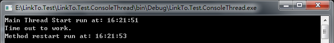
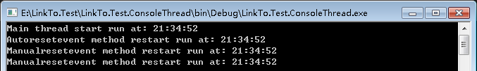
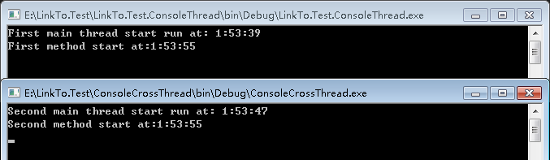

本笔记摘抄自：https://www.cnblogs.com/zhili/archive/2012/07/23/Event_Constructor.html，记录一下学习过程以备后续查用。
前面讲的线程同步主要是用户模式的（CLR Via C# 一书中是这么定义的，书中说到线程同步分两种：一、用户模式构造 二、内核模式构造），对于内核模式构造
（指的的是构造操作系内核对象），我们使用.NET Framework中的类如AutoResetEvent、Semaphore中方法来实现线程同步，其实其内部是调用操作系统中的内核
对象来实现的线程同步，此时就会将线程从托管代码转为内核代码。而用户模式构造，因为没有调用操作系统内核对象，所以线程只会在用户的托管代码上执行。
一、WaitHandle基类介绍
System.Threading命名空间中提供了一个WaitHandle 的抽象基类，此类就是包装了一个Windows内核对象的句柄（句柄可以理解为标示了对象实例的一个数字，
具体大家可以查资料深入理解下，在这里只是提出理解句柄也是很重要的）。
在.NET Framework中提供了从WaitHandle类派生的类，它们的继承关系为：
WaitHandle
EventWaitHandle
AutoResetEvent
ManualResetEvent
Semaphore
Mutex
当我们用构造函数来实例化AutoResetEvent、ManualResetEvent、Semaphore、Mutex这些类的对象时，其内部都调用了Win32 CreateEvent或者
CreateEvent函数或者CreateSemaphore或者CreateMutex函数，这些函数调用返回的句柄值都保存在WaitHandle基类定义的SafeWaitHandle字段中。
二、事件(Event)类实现线程同步
2.1 AutoResetEvent （自动重置事件）
2.1.1先讲讲AutoResetEvent类的构造函数，其定义为：
public AutoResetEvent(bool initialState);
构造函数中用一个bool 类型的初始状态来设置AutoResetEvent对象的状态。如果要将AutoResetEvent对象的初始状态设置为终止，则传入bool值为true；
若要设置为非终止，则传入bool值为false。
2.2.2WaitOne方法定义：
public virtual bool WaitOne(int millisecondsTimeout);
该方法用来阻塞线程，当在指定的时间间隔还没有收到一个信号时，将返回false。
调用Set方法发信号来释放等待线程。
在使用过程中WaitOne方法和Set方法都是成对出现的：
一个用于阻塞线程，等待信号；
一个用来释放等待线程(就是说调用set方法来发送一个信号，此时WaitOne接受到信号，就释放阻塞的线程，线程就可以继续运行。)
线程通过调用AutoResetEvent的WaitOne方法来等待信号，如果AutoResetEvent对象为非终止状态，则线程被阻止，直到线程调用Set方法来恢复线程执行；
如果AutoResetEvent为终止状态时，则线程不会被阻止，此时AutoResetEvent将立即释放线程并返回为非终止状态（指出有线程在使用资源的一种状态）。
下面代码演示AutoResetEvent的使用：
class Program
{
//创建对象
public static AutoResetEvent autoResetEvent = new AutoResetEvent(false);
static void Main(string[] args)
{
#region 线程同步：AutoResetEvent的使用
Console.WriteLine("Main thread start run at: " + DateTime.Now.ToLongTimeString());
Thread thread = new Thread(WaitOneMethod);
thread.Start();
//阻塞主线程3秒钟
Thread.Sleep(3000);
//释放线程
autoResetEvent.Set();
Console.Read();
#endregion
}
/// <summary>
/// WaitOne方法
/// </summary>
public static void WaitOneMethod()
{
autoResetEvent.WaitOne();
Console.WriteLine("Method restart run at: " + DateTime.Now.ToLongTimeString());
}
}运行结果如下：
若创建对象时，把它改为public static AutoResetEvent autoResetEvent = new AutoResetEvent(true); ，看到的输出结果的时间就是一样的了。因为设置为True时，
表示此时已经为终止状态了。因此，autoResetEvent.Set()可以理解为将autoResetEvent的状态设置为终止状态，因而释放线程。
上面用到的是没带参数的WaitOne方法，该方法表示无限制阻塞线程，直到收到一个事件为止（通过Set方法来发送一个信号）。
通过bool WaitOne(int millisecondsTimeout)，当超时时，线程即使没收到Set发来的信号，也将不再阻塞线程而让它继续运行，只是WaitOne方法返回的值不一样：
当收到Set信号时返回值为True，否则返回值为false。
下面代码演示WaitOne(millisecondsTimeout)的使用：
class Program
{
//创建对象
public static AutoResetEvent autoResetEvent = new AutoResetEvent(false);
static void Main(string[] args)
{
#region 线程同步：WaitOne(millisecondsTimeout)的使用
Console.WriteLine("Main thread start run at: " + DateTime.Now.ToLongTimeString());
Thread thread = new Thread(WaitOneTimeoutMethod);
thread.Start();
//阻塞主线程3秒钟
Thread.Sleep(3000);
//释放线程
autoResetEvent.Set();
Console.Read();
#endregion
}
/// <summary>
/// WaitOneTimeout方法
/// </summary>
public static void WaitOneTimeoutMethod()
{
if (autoResetEvent.WaitOne(2000))
{
Console.WriteLine("Get signal to work.");
Console.WriteLine("Method restart run at: " + DateTime.Now.ToLongTimeString());
}
else
{
Console.WriteLine("Time out to work.");
Console.WriteLine("Method restart run at: " + DateTime.Now.ToLongTimeString());
}
}
}运行结果如下：

若把Thread.Sleep(3000);设为Thread.Sleep(1000);，此时线程将收到Set发过来的信号，得到的结果将是Get signal to work，时间相差就只有1秒了。
2.2 ManualResetEvent(手动重置事件)
ManualResetEvent和AutoResetEvent的使用方法很类似，因为他们都是从EventWaitHandle类派生的，不过他们还是有些区别：
2.2.1AutoResetEvent 为终止状态(true)时，如果线程调用WaitOne方法的话线程是不会被阻止的。此时AutoResetEvent将立即释放线程并返回到非终止状态(false)，
在这之后如果线程再次调用WaitOne方法的话，线程将会被阻止。(注：调用WaitOne方法自动改变状态，仅对初始状态为终止状态时有效。)
2.2.2ManualResetEvent为终止状态(true)时，如果线程调用WaitOne方法的话线程也是不会被阻止的。此ManualResetEvent将立即释放线程但不会返回到非终止
状态(false)，除非我们手动将状态改为终止状态(false)，否则在这之后如果线程再次调用WaitOne方法的话，线程不会被阻止。
下面代码演示两者的区别：
class Program
{
//创建对象
public static AutoResetEvent autoResetEvent = new AutoResetEvent(false);
public static ManualResetEvent manualResetEvent = new ManualResetEvent(false);
static void Main(string[] args)
{
#region 线程同步：ManualResetEvent的使用
Console.WriteLine("Main thread start run at: " + DateTime.Now.ToLongTimeString());
Thread threadAuto = new Thread(AutoResetEventMethod);
threadAuto.Start();
autoResetEvent.Set();
threadAuto = new Thread(AutoResetEventMethod);
threadAuto.Start();
Thread threadManual = new Thread(ManualResetEventMethod);
threadManual.Start();
manualResetEvent.Set();
threadManual = new Thread(ManualResetEventMethod);
threadManual.Start();
Console.Read();
#endregion
}
/// <summary>
/// AutoResetEvent方法
/// </summary>
public static void AutoResetEventMethod()
{
autoResetEvent.WaitOne();
Console.WriteLine("Autoresetevent method restart run at: " + DateTime.Now.ToLongTimeString());
}
/// <summary>
/// ManualResetEvent方法
/// </summary>
public static void ManualResetEventMethod()
{
manualResetEvent.WaitOne();
Console.WriteLine("Manualresetevent method restart run at: " + DateTime.Now.ToLongTimeString());
}
}运行结果如下：

2.3 跨进程之间同步
内核模式构造可实现同一台机器上的不同进程中的线程进行同步，因此可以使用AutoResetEvent来实现此功能。此时需要对AutoResetEvent进行命名，
但是AutoResetEvent只提供了带一个参数的构造函数，该如何实现呢？
办法还是有的，因为AutoResetEvent是继承自EventWaitHandle类，而EventWaitHandle类有多个构造函数。
除了之前的方法创建AutoResetEvent对象外，还可以通过EventWaitHandle autoEvent = new EventWaitHandle (false, EventResetMode.Auto,"My");这样
的方式来构造AutoResetEvent对象，此方式指定了名称。
下面代码演示跨进程之间的线程同步：
第一个进程代码：
class Program
{
//创建对象
public static EventWaitHandle autoEventFirst = new EventWaitHandle(false, EventResetMode.AutoReset, "First");
public static EventWaitHandle autoEventSecond = new EventWaitHandle(false, EventResetMode.AutoReset, "Second");
static void Main(string[] args)
{
#region 使用AutoResetEvent实现跨进程之间的线程同步
Console.WriteLine("First main thread start run at: " + DateTime.Now.ToLongTimeString());
Thread thread = new Thread(EventWaitHandleMethod);
thread.Start();
//为了有时间去启动另外一个进程
Thread.Sleep(15000);
autoEventFirst.Set();
autoEventSecond.Set();
Console.Read();
#endregion
}
/// <summary>
/// EventWaitHandle方法
/// </summary>
public static void EventWaitHandleMethod()
{
autoEventFirst.WaitOne();
Console.WriteLine("First method start at:" + DateTime.Now.ToLongTimeString());
}
}第二个进程代码：
class Program
{
//创建对象
public static EventWaitHandle autoEventSecond = new EventWaitHandle(false, EventResetMode.AutoReset, "Second");
static void Main(string[] args)
{
#region 通过AutoResetEvent实现跨进程间的线程同步
Console.WriteLine("Second main thread start run at: " + DateTime.Now.ToLongTimeString());
Thread thread = new Thread(EventWaitHandleMethod);
thread.Start();
Console.Read();
#endregion
}
/// <summary>
/// EventWaitHandle方法
/// </summary>
public static void EventWaitHandleMethod()
{
autoEventSecond.WaitOne();
Console.WriteLine("Second method start at:" + DateTime.Now.ToLongTimeString());
}
}运行结果如下：

从结果可以看出，第一个进程的autoEventSecond.Set();信号发出后，第二个进程可以收到并释放线程。